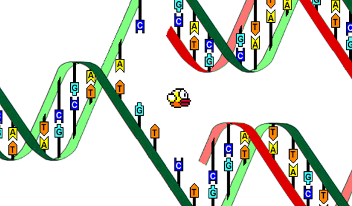
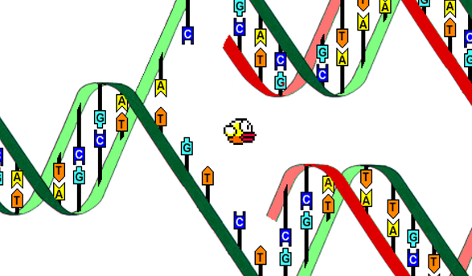

Résolution de Flappy Bird par algorithme génétique

Par Maxime Boucher et Sylvain Reynaud

Par Maxime Boucher et Sylvain Reynaud
Règles :
● L'oiseau doit réussir son parcours
● Sans interaction humaine
● En un temps minimal

● L'oiseau doit réussir son parcours
● Sans interaction humaine
● En un temps minimal
Pour cela, nous utilisons un algorithme métaheuristique créant une intelligence artificielle on-the-fly.
C'est-à-dire, il existe un ensemble de solutions (ou non) plus ou moins important, pour lesquelles l'oiseau réussit son parcourt, pouvant se traduire par x : solution et f(x) = fitness.
Nous avons ici régler la difficulté de telle sorte qu'il existe un très petit ensemble de solutions.
L'algorithme génétique consiste à sélectionner le meilleur oiseau d'une population, de croiser les autres avec ce dernier et de créer quelques mutations.
C'est-à-dire, il existe un ensemble de solutions (ou non) plus ou moins important, pour lesquelles l'oiseau réussit son parcourt, pouvant se traduire par x : solution et f(x) = fitness.
Nous avons ici régler la difficulté de telle sorte qu'il existe un très petit ensemble de solutions.
L'algorithme génétique consiste à sélectionner le meilleur oiseau d'une population, de croiser les autres avec ce dernier et de créer quelques mutations.
Notre équipe étant réduite, nous avons un peu tout fait à deux.
On a choisi d'utiliser le langage python en raison de sa polyvalence, de sa simplicité et donc pour permettre de rapides "prototypages".
Nous avons utilisé Gitlab pour mettre en commun le projet en temps réel, pour garder une cohérence maximale.
Et enfin Trello (kanban) nous a permis de visualiser les tâches restantes à terminer, les optimisations à faire et certains bugs à corriger.
On a choisi d'utiliser le langage python en raison de sa polyvalence, de sa simplicité et donc pour permettre de rapides "prototypages".
Nous avons utilisé Gitlab pour mettre en commun le projet en temps réel, pour garder une cohérence maximale.
Et enfin Trello (kanban) nous a permis de visualiser les tâches restantes à terminer, les optimisations à faire et certains bugs à corriger.